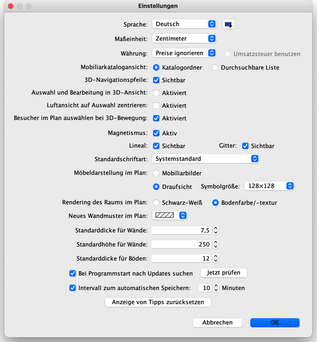

| Einstellungen ändern | |||
|
Um die Sweet Home 3D Einstellungen zu verändern, wählen Sie Sweet Home 3D > Einstellungen… auf macOS oder Datei > Einstellungen… auf anderen Systemen.  Im Dialog Einstellungen können Sie die Sprache einstellen welche im Sweet Home 3D Benutzerinterface verwendet wird. Die Schaltfläche neben dem Auswahlfeld Sprache ermöglicht den Import von zusätzlichen Sprachbibliotheksdateien mit der Erweiterung SH3L. Sie können die Maßeinheit einstellen die benutzt wird um die Bemaßung, das Gitter und die Längen darzustellen. In der Auswahlliste Währung können Sie die Währung der Mobiliarpreise auswählen. Wenn Sie eine Währung anstelle der Standardoption Preise ignorieren auswählen, können Sie einen Preis in den Dialog Mobiliar ändern eingeben, die Spalte Preis in der Mobiliarliste anzeigen und den Gesamtpreis der Mobiliarpreise in dieser Liste ermitteln. Wenn die Option Mehrwertsteuer verwenden (oder je nach Land Umsatzsteuer verwenden oder GST verwenden) ausgewählt ist, werden die Mobiliarpreise als Preise vor Steuern betrachtet, und Sie können einen Mehrwertsteuer- / Umsatzsteuer- / GST- Prozentsatz in den Dialog Mobiliar ändern eingeben und zusätzliche Spalten für Steuern in der Mobiliarliste anzeigen. Die Optionsfelder Katalogordner und Durchsuchbare Liste geben Ihnen die Möglichkeit auszusuchen, wie der Mobiliarkatalog angezeigt wird. Das Kontrollkästchen 3D-Navigationspfeile erlaubt es, die Pfeile als Hilfe zum Navigieren in Form von Schaltflächen in der 3D-Sicht einzublenden. Ist das Kontrollkästchen Auswahl und Bearbeitung in 3D-Ansicht aktiv können Mobiliarstücke direkt in der 3D-Ansicht bearbeitet werden. Sie können Mobiliarstücke mit einem Klick auswählen, mit einem Doppelklick ändern, das Mobiliarstück verschieben oder in der Höhenpositon ändern und Mobiliarstücke aus dem Mobiliarkatalog in der 3D-Ansicht platzieren. Wenn die Luftansicht aktiv ist, sorgt das Kontrollkästchen Luftansicht auf Auswahl zentrieren dafür, dass die ausgewählten Objekte im Wohnungsplan als Mittelpunkt für die 3D-Luftansicht gewählt werden. Ist im Wohnungsplan nichts ausgewählt, oder ist das Kontrollkästchen nicht aktiviert, wird die Luftansicht auf den Mittelpunkt der Wohnung zentriert, welcher sich in Abhängigkeit der enthaltenen Objekte ändern kann. Ist das Kontrollkästchen Besucher im Wohnungsplan auswählen bei 3D-Bewegung aktiv wird der virtuelle Besucher im 2D-Wohnungsplan ausgewählt und angezeigt. Jedes Mal wenn Sie eine Bewegung in der 3D-Ansicht im Virtuelles Begehen Modus vornehmen wird der virtuelle Besucher auch im 2D-Wohnungsplan neu positioniert. Sie sollten diese Option abwählen, falls Sie die aktuelle Auswahl im 2D-Wohnungsplan oder den angezeigten Ausschnitt bei jeder Bewegung nicht verlieren möchten. Das Kontrollkästchen Magnetismus aktiviert oder deaktiviert den Magnetismus beim Zeichnen von Wänden und setzen von Mobiliar. Er kann auch in der Werkzeugleiste mit der Schaltfläche Magnetismus aktviert und deaktivert werden. Das Kontrollkästchen Lineal macht es möglich, die Lineale sichtbar oder unsichtbar zu machen. Das Kontrollkästchen Gitter macht das Gitter sichtbar oder unsichtbar. In der Auswahlliste Standardschriftart kann die Schriftart gewählt werden, mit der Texte im Wohnungsplan angezeigt werden (zum Beispiel Namen von Mobiliar, Räumen und Flächenangaben, Bemaßungen sowie Texte). Die Optionsfelder Mobiliarbilder und Draufsicht geben Ihnen die Möglichkeit auszuwählen, wie Mobiliar im Wohnungsplan angezeigt werden sollen (Siehe Bilder weiter unten). Ist die Option Draufsicht ausgewählt, können Sie über die Auswahlliste Symbolgröße die Pixelgröße der Symbole auf dem 2D-Wohnungsplan auswählen. Höhere Auflösungen ergeben schönere Pläne auf dem Bildschirm, beim Druck oder Export, benötigen aber mehr Arbeitsspeicher. Die Optionsfelder Schwarz-Weiß und Bodenfarbe /-textur erlauben es, ob Räume im Wohnungsplan farblich, mit einer Textur oder in Graustufen dargestellt werden sollen (ausgedruckt = weiß). Die Auswahlliste Neues Wandmuster im Wohnungsplan bietet die Möglichkeit, ein bestimmtes Muster zu wählen um die Wände zu füllen. Da Muster wird für alle neu erstellten Wände verwendet nachdem die Einstellungen mit "OK" geschlossen wurde. Der Wert Standarddicke für Wände setzt die Dicke von allen Wänden, die erstellt werden nachdem die Einstellungen mit "OK" geschlossen wurde. Der Wert Standardhöhe für Wände setzt die Höhe von allen Wänden, die erstellt werden nachdem die Einstellungen mit "OK" geschlossen wurde. Der Wert Standarddicke für Böden setzt die Dicke von allen Böden, die nach dem Schließen der Einstellungen mit "OK" erstellt wurde. Falls aktiviert, sorgt die Option Bei Programmstart nach Updates suchen dafür, dass jedes Mal, wenn Sweet Home 3D gestartet wird, überprüft wird, ob Aktualisierungen für das Programm vorliegen. Falls es Aktualisierungen gibt, werden diese in einem Dialogfenster angezeigt. Durch die Option wird abhängig von ihrer Konfiguration auch die Verfügbarkeit für Aktualisierungen der Mobiliarbibliotheken (SH3F-Dateien), Texturbibliotheken (SH3T-Dateien) und Sprachbibliotheken (SH3L-Dateien) sowie installierter Plug-ins (SH3P-Dateien) überprüft. Mit der Schaltfläche Jetzt prüfen wird die Überprüfung auf Aktualisierungen sofort durchgeführt. Über das Feld Intervall zum automatischen Speichern wird, sofern diese Option aktiviert ist, der Zeitraum in Minuten festgelegt, nach dem die geöffneten Wohnungspläne immer wieder automatisch gespeichert werden sollen. Die Wohnungspläne werden dann im angegebenen Rhythmus automatisch in privaten Dateien gespeichert, welche beim nächsten Start von Sweet Home 3D zu Wiederherstellungszwecken eingesetzt werden, sollte das Programm abstürzen.
Zu guter letzt: Die Schaltfläche Anzeige von Tipps zurücksetzen
setzt die Antworten in den Tipp-Fenstern zurück (Tipp nicht wieder
anzeigen) das erscheint, wenn Sie bestimmte Werkzeuge benutzen. Dies
bedeutet, dass alle Dialogboxen, bei denen ausgewählt wurde, sie
sollen nicht mehr erscheinen, wieder angezeigt werden.
|

|